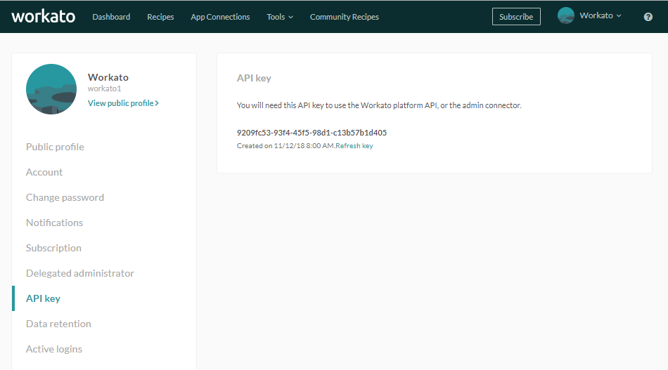
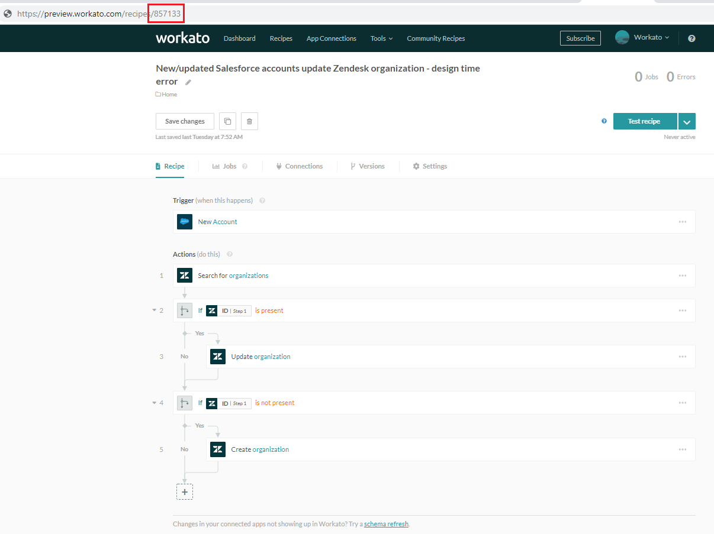
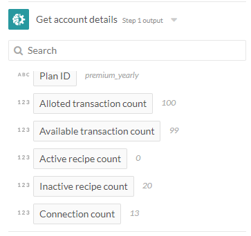

Workato Admin connector
The Workato Admin connector enables building of recipes that monitor and manage active recipes, either in the user's Workato account or the Workato accounts being managed.
Stopped recipes and failed jobs can have automated responses and notifications to mitigate their impact on critical business processes. Account, recipe and job details can also be retrieved via the Workato Admin connector.
Example scenarios
- Notify designated team members when a key recipe is stopped - notification via Gmail, SMS, Twilio phone call or IVR, Slack, etc.
- Schedule on-call teams and build escalation policies using Workato recipe logic
- Flag low transaction counts and notify integration managers
- Build job history report logs or audit reports in Google Sheets
- Build recipe reports of recipes for an overview of automations, connected apps, etc. in the company
Connection
When establishing the connection, select from My account or Someone else's account.
- For My account, no further authentication information is needed
- For Someone else's account, the account email and API key has to be provided
The following shows the different fields required for the available connection options.

Establishing Workato Admin connection
The managed user has to retrieve the API key from their Account settings > API key.

Retrieve API key from Settings > API key
Triggers
New failed job trigger
The New failed job trigger is able to monitor all active recipes, or only selected recipes, for failed jobs. This is useful in ensuring that key recipes are monitored and that corrective actions are carried out and teams are alerted when a recipe does not execute as expected.
When monitoring selected recipes, provide the IDs of recipes to watch.

Specify recipes to monitor for failed jobs
Recipe IDs can be found in the recipe page URL as highlighted below.

Recipe IDs can be found in recipe URL
Similar to the error notification emails, this trigger will trigger only once an hour for the same error type. For example:
- If the monitored recipe encounters 5 failed jobs with the same error within a 2-hour timespan, the recipe will only pick up 2 trigger events.
- If the monitored recipe encounters 5 failed jobs with different errors within a 2-hour timespane, the recipe will pick up 5 trigger events.
Recipe stopped by Workato trigger
Under certain circumstances, Workato stops active recipes, e.g. when 60 cumulative authentication errors occur in the trigger. Generally, Workato stops recipes when they encounter non-recoverable errors, i.e. when Workato has attempted to carry out the trigger or action without success for a consecutive number of times.
This trigger allows users to build ‘restart’ logic or other custom escalation policies for key recipes that should not be stopped.
When monitoring selected recipes, provide the IDs of recipes to watch.

Specify recipes to monitor whether the recipes are stopped by Workato
Recipe IDs can be found in the recipe page URL as highlighted below.
Recipe IDs can be found in recipe URL
Actions
Get account details action
Get information about the Workato account, such as subscription plan type, allotted and remaining transaction counts, recipe and connection counts.

Available account details datapills for use
Get recipe details action
Get key information about recipe including status, job account, current version, etc. The following shows the available data from the Get recipe details action.

Available recipe details datapills for use
List jobs created by recipe action
Action lists the last 100 jobs by default.
- Users can filter by job status e.g. show failed jobs only
- Users can filter by date range as well
The folowing lists the available fields to filter for jobs by.

Filters to specify the jobs to retrieve
The List jobs action output datatree returns a list of jobs, with standard details about each job such as job ID and job status, as well as custom job report data.

Available job details datapills for use
List recipes action
Retrieves a list of up to 100 recipes.
The folowing lists the available fields to filter for jobs by.

Filters to specify the recipes to retrieve
The List recipes action output datatree returns a list of recipes, with standard details about each recipe such as recipe ID, recipe name and job counts.

Available recipe details datapills for use
Start recipe action
Action allows specified recipes to be started. A single recipe can be selected from a picklist. Alternatively, multiple recipes can be specified by ID.

Select recipe to start via picklist or recipe IDs
Stop recipe action
Action allows specified recipes to be stopped. A single recipe can be selected from a picklist. Alternatively, multiple recipes can be specified by ID.
 Select recipe to stop via picklist or recipe IDs
Select recipe to stop via picklist or recipe IDs